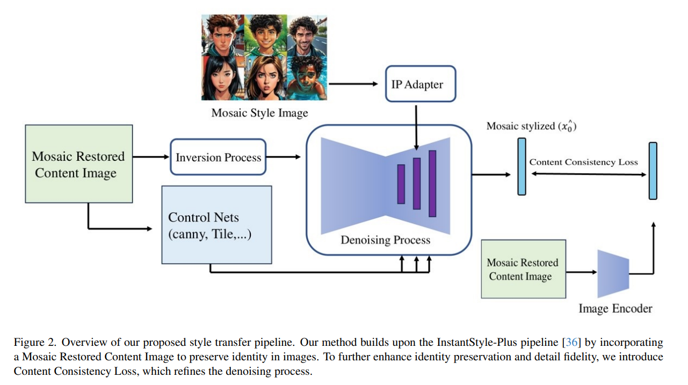

Training-Free Diffusion Framework for Stylized Image Generation with Identity Preservation
Generate stylized images that keep a subject’s identity — with no additional training, by orchestrating pretrained diffusion components.
Summary
Stylizing an image — turning a photo into a particular artistic look — while keeping the subject instantly recognizable usually demands costly, per-subject fine-tuning. This work shows that you don’t need any extra training to get there.
The approach is training-free: instead of fine-tuning a model, it orchestrates powerful pretrained components so they work together. A diffusion backbone such as Flux or Stable Diffusion handles generation; an IP-Adapter injects the subject’s identity and appearance from a reference image; ControlNet preserves structure and pose; and the text prompt drives the target style. Because nothing is retrained, the method stays lightweight and easy to deploy while still producing stylized images that hold on to the subject’s identity.

Key contributions
- Training-free pipeline — no fine-tuning needed to adapt to new subjects or styles.
- Identity preservation through reference-guided conditioning with an IP-Adapter.
- Modular orchestration of a Flux / Stable Diffusion backbone, ControlNet, and prompt-driven style.
- Deployment-friendly design suited to real commercial image-generation services.